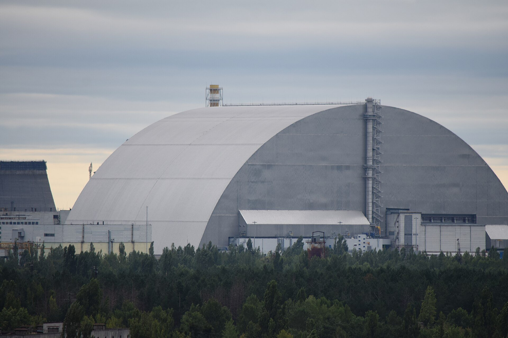
Partículas radioativas de Chernobil resistiram 40 anos mais estáveis do que se esperava
Estudo com raios X em seis partículas de Chernobil mostra combustível mais estável que o esperado. Os autores pedem cautela.
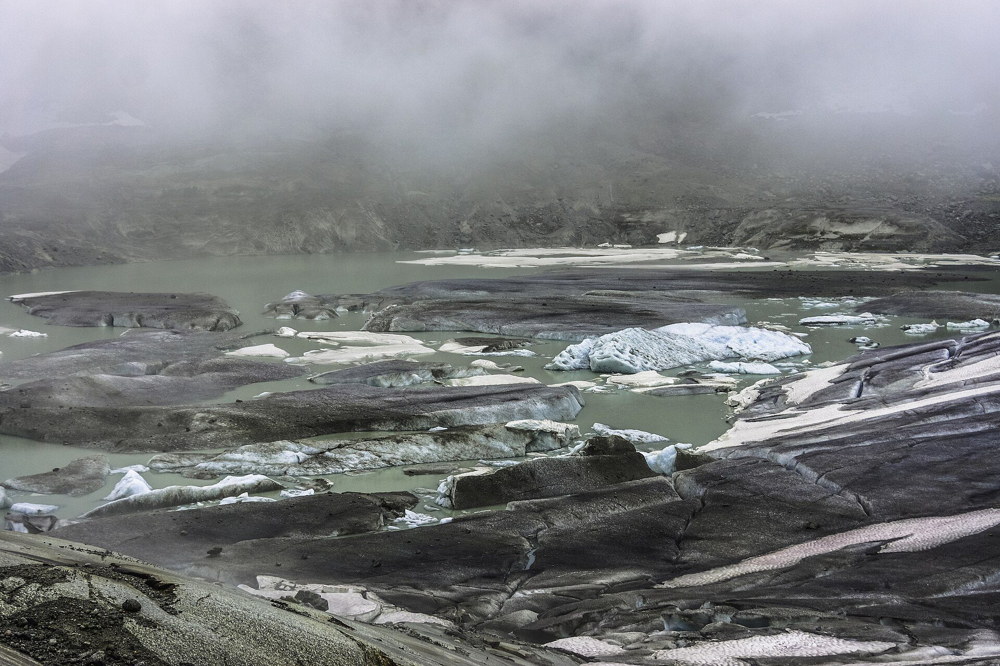
Geleiras suíças perderam quase 20% do gelo em cinco anos, mostra relatório
Relatório suíço mostra perda de mais de 5% do gelo em 2026 e de quase 20% em cinco anos. Duas geleiras desapareceram.
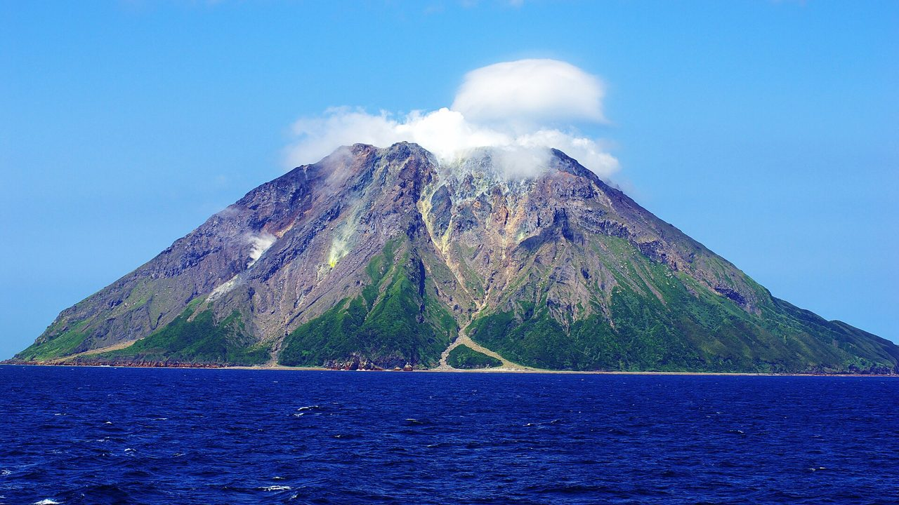
Supervulcão japonês de Kikai está se reabastecendo de magma, mostra estudo
Imagens sísmicas sob o mar mostram magma novo sob a caldeira que explodiu há 7.300 anos. Os autores descartam erupção iminente.
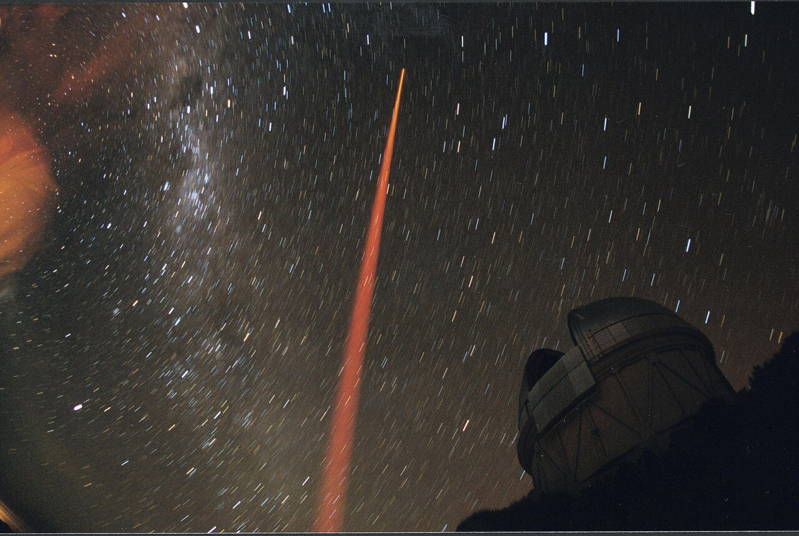
Físicos medem pela primeira vez uma 'escada de energia' quântica prevista há 40 anos
Com átomos presos por laser, uma equipe de Caltech recriou pontos críticos da matéria e confirmou, na prática, uma teoria de 40 anos que nunca tinha sido medida diretamente.
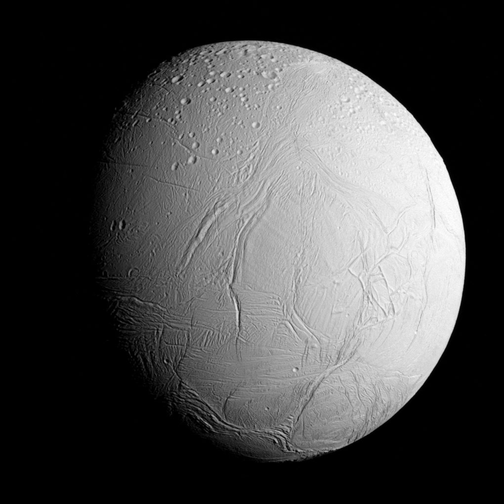
A lua Encélado pode 'preparar a amostra' e facilitar a busca por vida
O gelo lançado pela lua de Saturno concentra sozinho substâncias do oceano escondido. Isso pode facilitar muito a detecção de sinais de vida por uma futura missão.
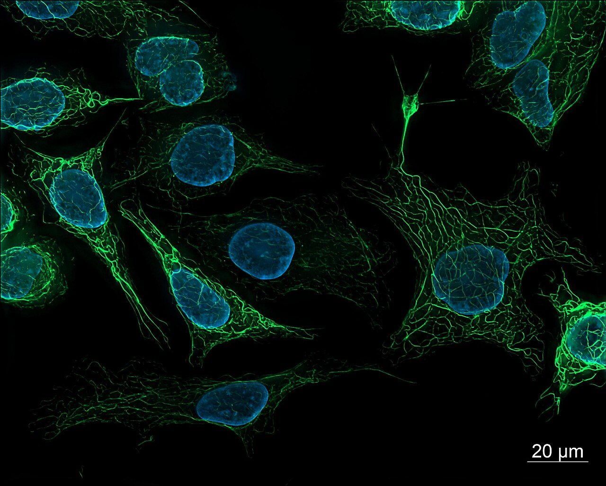
Cientistas acham a célula-mãe de tendões e ligamentos, os tecidos que não cicatrizam bem
Pesquisadores da Weill Cornell identificaram uma célula-tronco que é a fonte de tendões e ligamentos. A mesma célula, hiperativa, ajuda a explicar a dor da estenose espinhal.
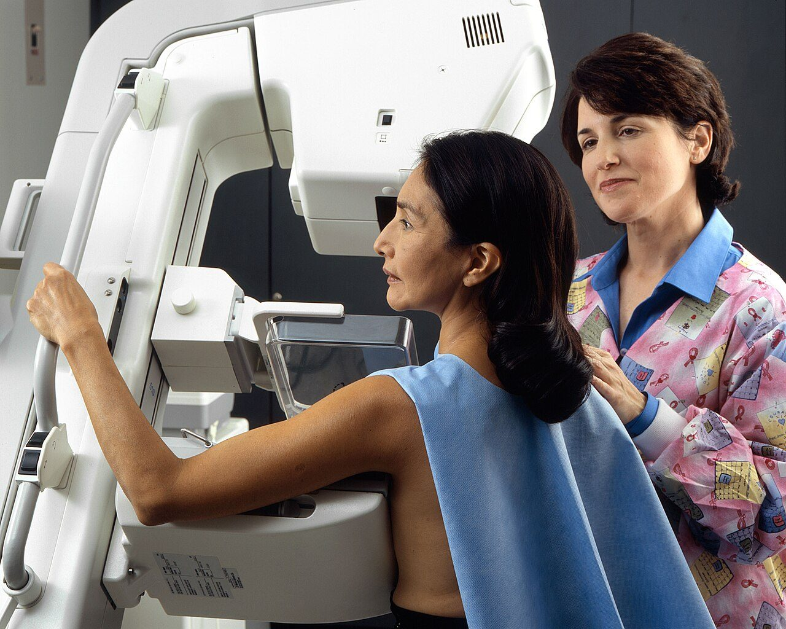
O maior medo sobre a mamografia pode ter sido superestimado por décadas
Uma reanálise dos grandes estudos de rastreamento estima o sobrediagnóstico do câncer de mama abaixo de 5%, contra estimativas antigas de 30% a 50%.
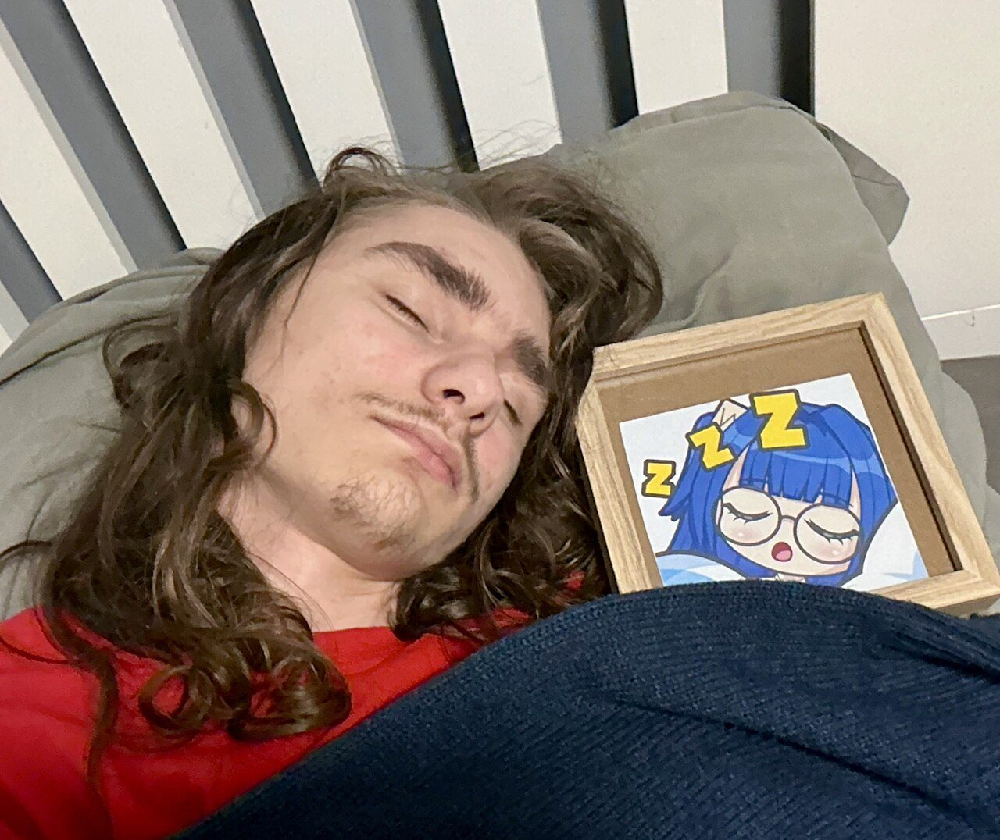
Sonhar pode gastar a energia do cérebro mais rápido do que ele repõe
No sono REM, o sangue e o combustível que chegam ao cérebro aumentam, mas a energia disponível nos neurônios cai. Um estudo japonês chama isso de paradoxo energético do sonho.

As primeiras estrelas podem explicar as galáxias 'estranhas' que o James Webb achou
Um estudo mediu estrelas gigantes e pobres em metais e descobriu que seus ventos são muito mais fracos que o esperado. Isso muda como elas vivem e morrem, e ajuda a explicar as galáxias antigas do Webb.
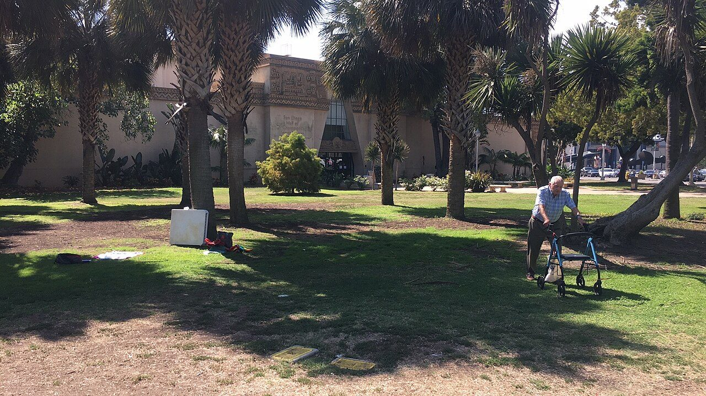
A força que some com a idade pode começar num 'fio solto' entre nervo e músculo
Um estudo americano aponta que parte da fraqueza muscular da velhice vem de uma falha na comunicação entre nervos e músculos, e mostra um caminho para reverter.
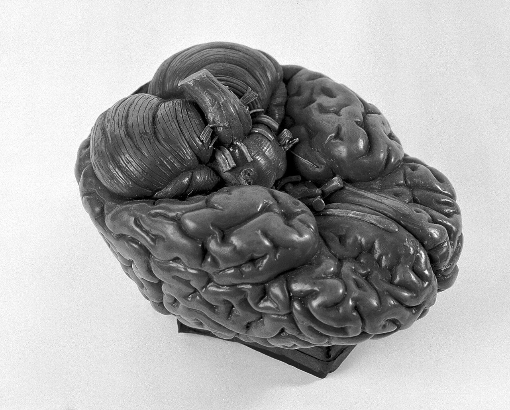
O cérebro humano é, na verdade, dois órgãos antigos que a evolução colou juntos
Um estudo de Stanford mostra que a parte que pensa e a parte que mantém você vivo nasceram de linhagens celulares diferentes. E isso já abriu uma via para estudar ELA e atrofia muscular espinhal.
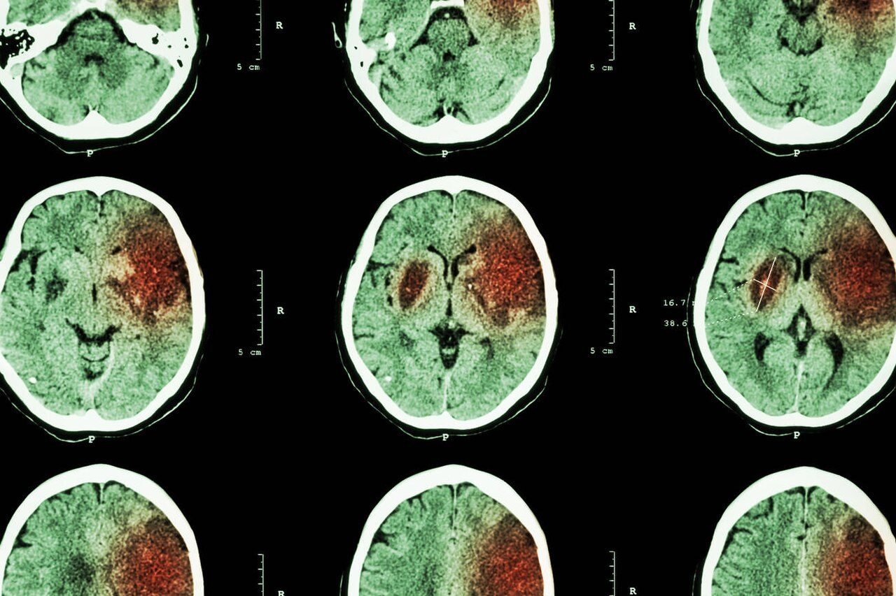
Long COVID danifica neurônios de dopamina, revela estudo com imagem cerebral
Exames de PET mostraram até 20% menos densidade de terminais de dopamina no cérebro de pacientes com COVID longa. O achado explica a fadiga e a névoa mental, e aponta tratamentos.
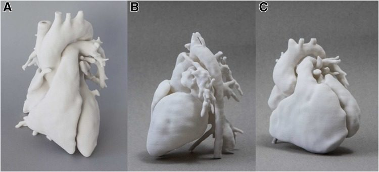
Coração humano regenera músculo após infarto, mostra estudo inédito
Pela primeira vez, cientistas mostraram que células do músculo cardíaco humano voltam a se dividir depois de um infarto. O achado derruba um velho dogma da medicina.

Antidepressivos nos rios afetam peixes mais que humanos, diz estudo
Cientistas japoneses mostraram que proteínas cerebrais de peixes reagem a antidepressivos em concentrações até dez vezes menores que as humanas, nos mesmos níveis já medidos em rios poluídos.
Receba as notícias antes de todo mundo
As internacionais que importam, em português, uma vez por semana.
Assinar a newsletter